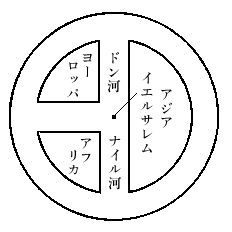

私の講演は「東西交通史上より觀たる日本の開發」といふ題目である。他の講師方の講演題目は、日本の開國の當時、若くは開國以後に關することが多いが、私の講演は寧ろ開國以前に關するもので、我が日本が開國に至るまでに、いかなる風にして、世界に知られて行つたかといふことを、主として御話いたしたいと思ふ。
抑
 我が日本は建國以來既に約二千六百年を經て、隨分世界の舊國の一として知られてゐるのであるが、單に舊いといふだけでは、日本の誇にはならない。舊いは舊いが併しまた同時に新しいことが、實に日本の誇るべき點であらうと思ふ。日本は建國以來約二千六百年といふ長い年月を閲しつつ、その間絶えず發展進歩を續けて來た、實に新しい國である。この點が日本の特色である。舊い國は兔角或る時期に於いて、國運が停滯するとか、或は老衰するといふことを免れないのであるが、獨り我が日本のみが、絶えず發展進歩を續け得た所以は、何に因るかといへば、それは日本國民が外國と觸接して、絶えずその新しい文化、新しい知識を攝取していつたといふことに歸するのである。
我が日本は建國以來既に約二千六百年を經て、隨分世界の舊國の一として知られてゐるのであるが、單に舊いといふだけでは、日本の誇にはならない。舊いは舊いが併しまた同時に新しいことが、實に日本の誇るべき點であらうと思ふ。日本は建國以來約二千六百年といふ長い年月を閲しつつ、その間絶えず發展進歩を續けて來た、實に新しい國である。この點が日本の特色である。舊い國は兔角或る時期に於いて、國運が停滯するとか、或は老衰するといふことを免れないのであるが、獨り我が日本のみが、絶えず發展進歩を續け得た所以は、何に因るかといへば、それは日本國民が外國と觸接して、絶えずその新しい文化、新しい知識を攝取していつたといふことに歸するのである。元來日本は古代に於ける世界の交通の上から見ると所謂絶海の孤島で、極めて交通不便な位置に立つて居つた。世界の交通、東洋と西洋との交通は隨分古く、二千年近くも以前から開けて、ギリシア人などは夙に東洋方面へ出掛けて來て居る。しかしその東洋といふのは支那までで、日本へは來てゐない。日本が遠いヨーロッパ諸國と交通を開始したのは、支那より一千年も一千五百年もおくれてゐる。日本は交通の上から觀ると、此の如く不便な地位に立つたに拘らず、日本國民は外國と觸接する機會ある毎に、その新しい文化、新しい知識を攝取すべく努力したので、この點は餘程朝鮮人や支那人と趣きを異にしてゐると思ふ。支那人や朝鮮人などは古代に於ては、日本よりも遙に交通上、便利な位置に立つたのであるが、その外國の新知識や新文化を取入れる熱心さにおいて、到底日本人のそれに比較にならぬのである。日本人は支那人や朝鮮人に比して、遙に外國の新知識や新文化を攝取するに熱心であつた。これが東亞に於て日本のみが今日の如く優勝の地位を占めるに至つた主要なる原因であらうと思ふ。
我が國は歐米諸國と交通を開いて以來、殊に明治時代に、盛に西洋の文物を輸入した。その熱心さは世界の驚嘆する所であるが、併しこの態度は、必ずしも西洋の文物に對してのみでなく、また明治時代に限つた譯でない。維新の五ヶ條の御誓文の一にある、知識を世界に求めて、大いに皇基を振起することは、我が國古來傳統の大方針と認めねばならぬ。そのかみ唐と交通した時代に、支那の文物を輸入した熱心な態度も、またポルトガル人の來航した時代に、極西の知識を輸入した熱心な態度も、格別明治時代のそれに遜色がなかつた。私は二三の實例を擧げて、これを證明しようと思ふ。
唐時代に支那に新たに傳はつた佛教に法相宗がある。これは有名な玄弉が唐の太宗の時代に西暦六四五年に、印度から始めて支那に持つて歸つた新宗旨である。所がその時日本から支那に留學して居つた道昭といふ僧侶が直に玄奘に就いてこの新宗旨を學んで、之を日本へ傳來した。道昭が我が國に法相宗を傳へたのは、孝徳天皇の御代で西暦六五三年に當る。即ち法相宗が印度から新たに支那へ傳來して、僅か八年經つか經たぬうちに、早くもその新宗旨が日本へ輸入されたのである。
儒教の方面に就いて申せば、儒教の經典に孝經がある。この孝經は支那歴代を通じて尊重されて居るが、殊に唐時代に最も尊重されて、唐の玄宗の天寶三載（西暦七四四）に天下何れの家でも、家毎に必ず孝經一本を備へて、朝夕講習せよといふ御布令が發せられて居る。この新しい制度は、間もなく我が國に採用されて、稱徳天皇の御代に西暦七五七年に、我が國でも家毎に孝經一本を備へて、朝夕之を講習せよといふ御布令が發せられて居る。丁度十三年目に、唐の新制度が我が國に實施された譯である。
方面を變へて天文の方を觀ると、唐時代に出來た有名な暦に大衍暦がある。この大衍暦は唐の玄宗時代に、即ち唐の開元十六年（西暦七二八）から唐の朝廷に採用された新暦である。然るに當時支那に留學して居つた吉備眞備が、その大衍暦の非常に優秀なることを聞き知つて、その歸朝の時にこの暦を我が國に將來した。それは聖武天皇の御代で西暦七三四年で丁度大衍暦が唐に採用されてから六年目の後である。それから淳仁天皇の御代になると、西暦七六三年からこの大衍暦が唐同樣に我が朝廷にも採用されて、爾後約百年の間、この暦が日本の正暦と定められたのである。
此の如く宗教でも儒學でも天文でも何でも、善いもの新しいものが出來ると、それが直に我が國に輸入される。八年とか十三年とか六年だとかの年月はその頃の交通不便な状態から考へて比較すると、今日の殆ど半年位にも一年位にも當らないのである。御承知の通り唐時代に於ける日本と支那との交通は、非常に困難であつた。小さい帆船で羅針盤の設備もなく、從つて方向も不確な儘に、頼りない航海をするので、大抵三度に一度は難船するといふ有樣で、實に命掛けで航海をしたものである。それで我が朝廷から派遣する遣唐使の船なども、早くて五年目に一度か、普通に十年目に一度位しか出掛けて居らぬ、此等の事情にも拘らず、唐の新しい制度や文物や宗教學問などを、或は六年或は八年或は十三年の後に直に我が國に輸入する。此の如きことは他國人には容易に企て及ばぬことである、試みに朝鮮人の場合と對比すればこの點がよく判然すると思ふ。
唐時代の朝鮮は丁度新羅の時代に當るが、この新羅は日本と比較すると、支那との交通は餘程便利であつた。第一陸續きでもあり、大抵一年置きか二年置き位に、「遣唐」使を唐の朝廷へ送つてゐる。それにも拘らず彼等は新しい文化新しい知識を攝取する點に於て、日本とはまるで比較にならぬほど緩怠であつた。例へばさきの法相宗である。法相宗の支那に傳來したのは、新羅統一以前ではあるが、その時新羅の圓測といふ僧侶が長安に留學して居つて、我が道昭と前後して、玄奘三藏からこの新宗教の奧義を聽聞しながら、之をその本國に輸入して居らぬ。法相宗の新羅に傳つた時代は、正確には申されぬが、日本より餘程後くれ、約百年位も後であらうと思ふ。孝經も早く朝鮮に傳はつて居つたのであるが、唐の開元時代の如き、天下家毎に一本を備へるといふ制度は、遂に朝鮮で施行されて居らぬ。また當時新羅の暦は甚だ不完全であつたと想像せらるるに、優秀なる大衍暦が出來ても、新羅の政府は遂に之を採用せなかつた。新羅は支那との交通が頻繁であり、便利であつたに拘らず、此の如く新しい文化、新しい知識を輸入するのに不熱心であつて、到底我が國と同一に
序に申述べるが、この大衍暦は支那で出來た古今の暦のうちで、最も優秀なる暦であるのみならず、世界に對しても誇るに足るべき優秀なる暦であつた。この暦は支那の有名な一行といふ僧侶が、唐の玄宗の開元年間に作製したものである。玄宗の開元の初期に使用されて居つた暦は、唐の高宗の麟徳二年（西暦六六五）に、之も有名な李淳風の作つた麟徳暦であるが、開元の頃となると、この麟徳暦が不正確となり、暦と天體の運行とが一致を缺くことになり、暦表に日蝕と記載してある日に日蝕がなかつたり、種々の不便が起つたので、改暦の必要を感じた。
唐の天文臺には早くから、印度人の天文學者が勤務して居つたが、玄宗時代に改暦の氣運が熟すると、當時の太史監で後世の天文臺長ともいふべき位置に在つた、印度人の瞿曇悉達（Gautama Siddh
 rta）といふ天文學者は、印度暦の名譽を發揮するには、この時機を逸してはならぬと考へ、開元六年（西暦七一八）に印度暦を漢譯して九執暦を公にした。九執とは梵語 Navagr
rta）といふ天文學者は、印度暦の名譽を發揮するには、この時機を逸してはならぬと考へ、開元六年（西暦七一八）に印度暦を漢譯して九執暦を公にした。九執とは梵語 Navagr ha の意譯である。Nava とは九といふ數で、Grha の本來の意味は「執へる」又「掴へる」ことであるが、同時にその本義を延ばしてha と稱するのである。印度の天文は日・月・水・火・木・金・土、其他の都合九個の Grha を本とするから、その暦を九執暦又は九曜暦と稱したものと思ふ。
ha の意譯である。Nava とは九といふ數で、Grha の本來の意味は「執へる」又「掴へる」ことであるが、同時にその本義を延ばしてha と稱するのである。印度の天文は日・月・水・火・木・金・土、其他の都合九個の Grha を本とするから、その暦を九執暦又は九曜暦と稱したものと思ふ。かくて玄宗の開元六年に印度の天文學者の瞿曇悉達が改暦の參考に供すべく、九執暦を漢譯すると、更にその翌年の開元七年（西暦七一九）に中央アジアの吐火羅（Tokhara）國の王が、唐改暦の噂を聞き傳へたと見え、天文學に堪能なる其國の僧侶を長安に送つて、改暦の手傳ひを願ひ出てゐる。また同じ年に今のアフガニスタン地方に當る迦畢試（Kapisa）國の政府からも、天文に關する文獻を唐の朝廷に送呈して居る。兔に角唐の朝廷で改暦の議が始まると、中央アジアのイラン（波斯）系の天文と、印度系の天文と、支那傳統の天文とが、三つ巴となつて優劣を爭うた。この最中に支那に一行といふ偉大な天文學者が出て、開元九年（西暦七二一）から十五年（西暦七二七）までかかつて、最も完全なる大衍暦を作製した。一行は開元十五年に年僅か四十五歳で死んだが、彼の死後に種々の實驗によつて、大衍暦が最も優秀であることが立證されて、開元十六年から唐の朝廷に採用され、やがて又我が國にも採用されたのである。
この大衍暦の實質については、西洋の天文學者が隨分早くから研究して居り、また我が國の天文學者も相當深く研究して居る。私の友人のさる天文學者の研究によると、この大衍暦は頗る優秀なもので、今日現行の太陽暦に比して、餘り遜色がないといふことである。私の友人から傳へ聞いた所によつて、大衍暦と現行の太陽暦を對比すると、次の如く接近して居る。
大衍暦 太陽暦
太陽年 365日 2444 365日 2422
太陰月 29日 53059 29日 530588
即ち一年の長さの測量といひ、一月の長さの測量といひ、兩者は殆ど一致といふ程接近して居る。千二百年前の諸事不便な時代に出來た大衍暦としては、その精確なること驚嘆に價ひすべきではないか。太陽年 365日 2444 365日 2422
太陰月 29日 53059 29日 530588
されば西洋の天文學者の間に於ける一行の名譽は非常なものでフランスのパリ、サント・ジュヌヴィエヴ（St.Genevi
 ve）といふ有名な圖書館の入口に、世界の古今を通じて最も傑出した大科學者三十三人許りの名を鑿りつけてある。その三十三名中に一行が加へられ、一行を現代支那音で現はしたイーシン（Y-hsing）といふ名が、そこに鑿り付けられて居る。コペルニクス（Copernicus）やニュートン（Newton）などの西洋の大科學者の間に伍して、獨り東洋を代表する一行の名が、燦として異彩を放つて居るといふ。此の如き大天才の一行の作製した優秀なる大衍暦は、間もなく日本に將來採用されたに拘らず、新羅は遂に之を採用せなかつた。この一事によつても、兩國人の新しい文化、新しい知識に對する熱心の相違が判然するではないか。
ve）といふ有名な圖書館の入口に、世界の古今を通じて最も傑出した大科學者三十三人許りの名を鑿りつけてある。その三十三名中に一行が加へられ、一行を現代支那音で現はしたイーシン（Y-hsing）といふ名が、そこに鑿り付けられて居る。コペルニクス（Copernicus）やニュートン（Newton）などの西洋の大科學者の間に伍して、獨り東洋を代表する一行の名が、燦として異彩を放つて居るといふ。此の如き大天才の一行の作製した優秀なる大衍暦は、間もなく日本に將來採用されたに拘らず、新羅は遂に之を採用せなかつた。この一事によつても、兩國人の新しい文化、新しい知識に對する熱心の相違が判然するではないか。時代は八百年程降るが、ポルトガル人が西洋の新式鐵砲を東亞に輸入した場合にも、同じ例證を提供することが出來る。この場合にも日本人は支那人に比して、新しい知識を攝取する熱心が、遙に多大であることが證明される。一體鐵砲に必要缺くべからざる火藥は、今から九百年程前に北宋時代に、支那で發明されたもので、この火藥を利用した鐵砲といふ武器が戰場に現はれて來たのは、南宋時代からである。
元來
 又は砲とは石を飛ばす機械で、支那では秦漢時代、若くばその以前から戰爭に使用されて居つた。丁度撥釣瓶の樣な仕掛で、大きい石を敵陣の中へ撥ね飛ばすのである。所が火藥が發明されて、これを武器に利用する樣になると、鐵の器の中へ火藥を充填して之に火を點け、同樣の仕掛けで之を敵陣へ撥ね飛ばして、爆發せしむることとなつた。石を飛ばす普通の砲と區別して、之を鐵砲とも火砲ともいふ。これが鐵砲の本義である。この鐵砲は支那では南宋から元時代にかけて、戰爭に使用されて居る。
又は砲とは石を飛ばす機械で、支那では秦漢時代、若くばその以前から戰爭に使用されて居つた。丁度撥釣瓶の樣な仕掛で、大きい石を敵陣の中へ撥ね飛ばすのである。所が火藥が發明されて、これを武器に利用する樣になると、鐵の器の中へ火藥を充填して之に火を點け、同樣の仕掛けで之を敵陣へ撥ね飛ばして、爆發せしむることとなつた。石を飛ばす普通の砲と區別して、之を鐵砲とも火砲ともいふ。これが鐵砲の本義である。この鐵砲は支那では南宋から元時代にかけて、戰爭に使用されて居る。元の世祖が我が國に入寇した時、即ち弘安四年（西暦一二八一）の役に蒙古軍はこの鐵砲といふ新武器を使用して、大いに我が軍を惱ました。この時代の鐵砲などは、事實さして大なる效力はなかつた筈と想はれるが、兔に角日本人にとつては、全く未見未聞の新武器とて、實效以上の威嚇を與へたものと見え、當時の記録にも、
てつほうとて鐵丸に火を包で烈しく飛ばす。あたりてわるゝ時、四方に火炎ほとばしりて、煙を以てくらます。又その音甚だ高ければ心を迷はし、きもを消し、目くらみ、耳ふさがれて、東西を知らずなる。之が爲に打るゝ者多かり。
などあつて、我が將士が敵の鐵砲の攻撃に、困難恐慌した有樣を察知することが出來る。支那で發明された火藥は、蒙古時代に歐洲方面へ傳つた。之には從來種々異説もあるが、今日では一般に火藥は東洋から歐洲に傳つたものと認められて居る。火藥が傳ると間もなく之を利用した新式鐵砲、即ち金屬製有筒式火器が製作されて、戰爭に使用されて來た。この新式鐵砲は支那の舊式鐵砲に比して、可なり有效であつたが、それが更に次第に改良されて、十六世紀の初期になると、餘程有效な武器となり、歐洲の在來の戰術も、之が爲に一變する氣運となつた。
この十六世紀の半頃の天文十二年（西暦一五四三）にポルトガル人が我が大隅の種子島へやつて來て、新式の鐵砲を輸入した。丁度戰國時代の事とて、この舶來の新武器の鳥銃が、瞬く間に日本全國に採用された。我が國に於ける鐵砲傳來の歴史に最も關係のある、ポルトガル人ピント（Fernam Mendez pinto）の記録を信ずるならば、新式鐵砲即ち鳥銃が我が國に傳來して僅に十三年後の一五五六年の頃には、新式鐵砲は驚くべき勢ひで日本全國へ行渡つて、豐後の府中（Fucheo）すなはち今の大分の城下だけでも三萬梃の鐵砲があり、日本全國を總計したならば、恐らく三十萬梃位の鐵砲が使用されて居つたといふ。たつた十三年でこの有樣である。これは日本人が鐵砲の製造法をポルトガル人から學び傳へて、盛んに製造したからで日本人が新式武器を取入れる熱心には、流石のピントも驚嘆して居る。ピントの傳ふる所の鐵砲の數などはしばらく疑問として措いても、當時の日本人が、新式武器を利用する熱心は、外國人をして感心せしむる程であつた事實は疑ふ事が出來ぬ。
天文十二年に新式鐵砲が我が國に傳來してから、五十年經つた文禄元年（西暦一五九二）になると、豐太閤の朝鮮征伐が始まる。この頃には新式鐵砲は我が國の最も有力な武器となつた。當時朝鮮人は全然新式鐵砲の使用を知らぬ。支那人は我が日本人より約三十年も早くポルトガル人と觸接して居り、從つて我が國人よりも早く新式鐵砲の效能を承知して居つた筈であるが、例の保守的氣質で、我が國人の如く熱心にこの新武器を歡迎せなかつた。故に文禄征韓の頃になつても、舶來の新式鐵砲は、中々支那内地に行渡つて居らぬ。殊に朝鮮に出掛けた北支那遼東方面の明軍などは、朝鮮人以上に新式鐵砲の使用に不案内であつた。それで朝鮮人も明人も、皆我が軍の新式鐵砲に辟易して居る。
當時日本軍の戰術は、一番先に鐵砲でドーンとやる。かくして敵を威嚇して置いて、向ふが驚いてうろうろする間に、日本刀で斬り捲くる。これが日本軍の戰術であつた。それで支那人や朝鮮人の書いた、この時代の記録を見ると、何れも日本の鐵砲と刀とこの二の武器に非常に閉口して居る。文禄征韓の役に我が軍が勝利を得た原因は、種々あるであらうが、この新式鐵砲を利用したことが、確にその主要なる原因の一と認めねばならぬ。三百年前の弘安の役には、日本は蒙古高麗聯合軍の爲に、舊式の鐵砲で散々に苦しめられたが、三百年後の文禄の役には、竹篦返へしに、新式の鐵砲で明と朝鮮の聯合軍を散々に打ち破つた。鐵砲で受けた苦しみを鐵砲で首尾よく仕返しをしたといふ譯である。これも畢竟我が國人が新しい武器を支那人よりも遙に熱心に歡迎利用した結果に外ならぬ。此等二三の實例によつても我が國人が支那人や朝鮮人以上熱心に、古來知識を海外に求めて、外國の長所を採用した一端を窺知し得ると思ふ。
さて本題に立ち返つて我が國外と國との交通の跡をたづねると、第一が朝鮮半島との交通で、次が支那大陸との交通である。支那との交通は漢時代から始まり、隋唐時代に盛大を加へた。かくて我が國は支那とは盛に交通したが、支那以西の諸國とは、直接に交通を開かなかつた。されど支那は、殊に唐時代の支那は、世界文化の中心であり、且つ又外交の中心であつたから、あらゆる諸外國の人達がここに來集したから、我が國人は直接西方に出掛けずとも、支那で遠西諸國の人達と觸接の機會が尠くなかつた。
この唐時代に世界で一番貿易通商に活躍したのはアラビア商人で、彼等アラビア商人は、西はアフリカの西端から、東はアジアの東端に至る間の、即ち舊世界の殆ど端々に至るまでの貿易權を握つて居つて、南支那へも隨分澤山のアラビア商人が來集居留して居つた。殊に揚子江の口にやや近い揚州といふ處は、入唐の日本人が必ず通過せなければならぬ都市であるが、ここに幾千人のアラビア商人が滯在してをつた。自然アラビア商人は支那で日本人と觸接する機會も尠くなく、また日本國に關する知識を得る譯である。
當時のアラビア商人即ちマホメット教徒は、我が國の名をワクワク（W
kwk）と傳へて居る。ワクワクとは申す迄もなく倭國の音譯である。支那人は古く我が國を倭國と呼んだ。唐時代の支那人も同樣に我が國を倭國と呼んだ。唐時代には日本といふ國號も既に出來ては居るが、この日本といふ國號は、日本人自身の付けたもので、唐時代の支那人は餘り使用せぬ。唐時代の支那人は依然我が國を倭國と稱した。直接我が國へ通交せず、支那で日本人と接觸の機會があつたにしても、一般の場合では支那人を通じて我が國號を知つた所のアラビア商人等は、支那人同樣に、我が國を倭國と呼んだことに何等の不思議もない。唐時代の支那人は倭國をワクウオク（Wa-kwok）と稱した筈であるから、そのワクウオクを聞き傳へたアラビア商人達が、ワクワク（Wkwk）と訛つたものであらう。このワクワクすなはち倭國といふ我が國號が、始めてアラビアの記録に現はれたのは、西暦九世紀の半頃丁度八五〇年の頃即ち唐のやや末期に編纂されたイブン・コルダードベー（Ibn Khord
dbeh）といふ人の地理書であつて、その地理書の中に次の如き記事が見える。
支那の東方にワクワク（Wkwk）といふ國號を有する群島がある。黄金の極めて豐富な國で、「黄金が豐富なる爲」その國民は飼犬を羈ぐ鎖にも黄金を用ゐ、飼猿の首環にも黄金を用ふる程である。彼等は黄金を鏤めた外套を着用して居る。
これが西アジアの記録に、我が國のことを紹介した最初の記事である。我が國に黄金が多いと吹聽した記事は、如何なる事實に本づいたものか判然せぬ。併し古代からギリシア人や印度人の間に、世界の東方に黄金を多量に産出する土地があるといふ傳説が行はれて居つたから、それをワクワク國即ち我が國に附會したものか、或は唐宋時代には我が國の産業が未だ發達せず、從つて唐の末頃に支那へ出掛けて貿易した我が國人は、金とか銀とか又は砂金などを使用したから、かかる噂が起つたものか、その邊の事情は十分明白でない。kwk）といふ國號を有する群島がある。黄金の極めて豐富な國で、「黄金が豐富なる爲」その國民は飼犬を羈ぐ鎖にも黄金を用ゐ、飼猿の首環にも黄金を用ふる程である。彼等は黄金を鏤めた外套を着用して居る。イブン・コルダードベーの地理書以後のマホメット教徒の記録にも、ワクワクに關する記事が隨分載せられて居り、中にはワクワクの位置が可なり曖昧となつて居る物もあるが、兔に角マホメット教徒の記録を通じて、ワクワクといふ國は黄金の多い神祕的な一種の寶の島の如く傳へられて居る。有名なアラビアの『千一夜物語』普通に『アラビアンナイツ』（Arabian Nights）と稱せらるる物語の中にも、ワクワク島のことが記載されてある。その『千一夜物語』の一部にシンドバード（Sindb
d）といふ人の海外探檢談がある。シンドバードは有名なハルン・アル・ラシッド（Harun al Rashid）といふマホメット教國の教皇の時代の西暦九世紀の初期の人で、一身代を作るべく國都のバクダードを後に、世界の寶の島のワクワクへ渡航せんとして、その途中で種々なる危險に遭遇した物語が、彼の海外探檢談の一部であるといふ。此種の物語の通例として、法螺もあり假託もあり、勿論その儘に事實として受取り難いが、そは兔に角この探檢談そのものが、マホメット教徒の間に、世界の東端に黄金を多量に産出するワクワクといふ土地があると、信ぜられて居つた一つの證據に供することが出來る。日本はワクワクといふ稱呼で、唐のやや末期の西暦九世紀の半頃から、西アジアのマホメット教徒の間に知られたが、歐洲のキリスト教徒の間には、未だその存在を知られなかつた。日本の國名の始めて歐洲に傳つたのは、それより約四百五十年後の元時代、丁度西暦十三世紀の終頃からの事である。元即ち蒙古は太祖成吉思汗以來四方を征服して、大なる版圖を拓き、その孫に當る世祖忽必烈の頃になると、當時の世界の大半を併呑して仕舞つた。西はロシアから東は朝鮮半島の高麗に到るまで、悉く元の支配の下に立ち、南洋諸國も大抵元に朝貢した。かくて歐亞の二大陸に跨る空前の大帝國が出現して、從來一隅に割據して居つた諸小國の障壁が除き去られると、東西兩洋の交通が頗る便利となり、ドイツ人やフランス人などの歐洲人や、西方アジア人達が續々支那に出掛け又はここに移住した。同時に多數の支那人も西方に出掛け、ペルシアのタブリズ（Tabriz）といふ都會や、ロシアのモスカウ（Moscow）や、更に内地のノヴゴロード（Novgorod）といふ都會に、支那人の居留地が出來るといふ状況で、中世期で蒙古時代程東西の交通の盛大を極めた時代がない。最近に西暦一九二〇年にローマ教皇の古文書局から發見された、成吉思汗の孫に當る元の定宗
マルコ・ポーロは申すまでもなくイタリーのベニス（Venice）の人である。彼は西暦一二七一年に年十七歳の時に、父に伴はれて故郷を後に東洋に出掛け、東洋諸國を遍歴しつつ、一二七五年に支那に到着して、元の世祖に拜謁して非常な優遇を受け、足掛け十八年ばかり支那に滯在した。即ち一二七五年から一二九二年まで支那に滯在して居つた。一二九二年に世祖の皇女が同じ一族であるペルシアの王樣の許に嫁つがれることになつたので、その皇女を見送りかたがた歐洲へ歸ることになつた。かくて一二九二年にマルコ・ポーロ等の一行は、福建の泉州から船出して、印度洋ペルシア灣を經て、首尾よくペルシアの王廷に元の皇女を送り屆けた後ち、自分等は陸路小アジアを經て一二九五年に丁度足掛け二十五年目に故郷のベニスに歸着した。
ベニスでは浦島が龍宮から歸つた樣な大騷ぎで、彼の東洋に關する珍らしい物語を聽聞すべく、訪問者が市をなす有樣であつた。マルコ・ポーロは來集する訪問者を喜ばしめる目的で、東洋の豪華を物語る際に、誇張してよく百萬といふ數字を使用したから、やがて當時の人から「百萬のマルコ樣」（Messer Marco Millioni）といふ綽號を得たといふ。マルコ・ポーロが歸國すると間もなく、ベニスとゼノアとの兩市の間に戰爭が始まり、ベニス軍に加はつたマルコ・ポーロは敵軍に捕虜となつた。彼が西暦一二九八年にゼノア軍に捕虜となつて居る間に、彼の東洋見聞談を口授して人に書取らせた。これが有名なるマルコ・ポーロの旅行記である。元の世祖の日本入寇、即ち弘安四年（西暦一二八一）の役は、丁度このマルコ・ポーロの支那滯在中に起つた事件であるから、彼は勿論この事件を承知して、その旅行記の中に日本に關する記事を、比較的詳細に紹介して居る。
このマルコ・ポーロの旅行記に日本のことをヂパング（Zipangu）と書いてある。ヂパングとは日本國の支那音ジーペンクオ（Jih-p
 n-kuo）を訛つたものである。支那人は唐の頃まで我が國を倭國と稱したが、宋元時代には一般に日本國と稱することになつたから、支那人から我が國のことを傳へ聞いたマルコ・ポーロは、支那人の發音をその儘に、日本國をヂパングと書いたのである。兔に角日本國即ちヂパングといふ我が國號は、マルコ・ポーロによつて始めて歐洲人の間に傳へられた。彼の旅行記中の日本國に關する記事を紹介すると、大要次の如くである。
n-kuo）を訛つたものである。支那人は唐の頃まで我が國を倭國と稱したが、宋元時代には一般に日本國と稱することになつたから、支那人から我が國のことを傳へ聞いたマルコ・ポーロは、支那人の發音をその儘に、日本國をヂパングと書いたのである。兔に角日本國即ちヂパングといふ我が國號は、マルコ・ポーロによつて始めて歐洲人の間に傳へられた。彼の旅行記中の日本國に關する記事を紹介すると、大要次の如くである。
ヂパングは「支那」大陸から東千五百里 ばかり離れて、大海の中にある甚だ大きな島である。その國民は色が白くて非常に開化してゐる。……この國民の有する黄金は無限である。それはこの島から多量の黄金を産出するのに、その國王は「國民に」之を海外に輸出することを許可せぬ。それに大陸を遠く離れた絶海中の孤島であるから、この國へ外國商人の通商する者稀有である。此等の事情により、この國民は言語に絶する程の多量の黄金を有する譯である。今予は「讀者の爲に」この國王の驚くべき宮殿の有樣を物語らうと思ふ。この國王は頗る廣大な宮殿を有して居らるるが、此宮殿の屋根瓦はすべて純金製である。更に又この宮殿の建物と建物との間を連結する鋪石は「石の代りに」厚さ幾寸といふ黄金の板敷である。また各部屋の床板も矢張り同樣に厚さ幾寸の黄金の板である。故にこの宮殿の價値は計算以上で、とても普通の人には信用出來ぬ程高大なものである。蒙古の現時の大汗「世祖」忽必烈（Cublay）はこの島の黄金の無量なる由を傳へ聞き、之を併呑せん爲に、さてこそ征伐の軍を起した譯である。
かくてマルコ・ポーロは蒙古軍の我が國への入寇の有樣や、暴風による蒙古艦隊の大失敗などを、詳細にその旅行記中に記載してある。マルコ・ポーロもアラビアの地理學者のイブン・コルダードベーと同じく、否それ以上に、我國を黄金の寶の島扱ひにして居るが、彼の東洋の榮華繁昌についての紹介、殊にヂパングの黄金無量といふ吹聽は、尠からず慾深の歐洲人を刺戟した。一體元時代に東洋に旅行した人の紀行又は記録も尠くないが、その中でこのマルコ・ポーロの旅行記はその内容に於てその書き振りに於て、一番世間に歡迎せられ、西暦十四世紀から十五世紀にかけて、相當廣く愛讀された。廣く愛讀されるに從つて、愈大なる刺戟を歐洲人に與へ、この刺戟が遂に新大陸の發見といふ世界史上の大事件出現を促す一大原因となつたのである。上に申述べた通り、元時代に東西兩洋の交通が盛大になつて以來、東洋貿易も盛大になつて、歐洲人の東洋産物の需要、從つて歐洲に輸入される東洋産物は、日に月に、多きを加へて來た。歐洲人は最早東洋物産なくしては殆どその日常の生活に差支へるといふ状態となつて來た。西暦十四世紀の頃に於る東西兩洋の一番普通な交通路は、陸上では支那から出て今の新疆省の地面を經て、中央アジアに出で、アラル海や裏海の北方を通つて、黒海の邊に達する。要するにシベリアの西南の黒海方面に出ると、茲に澤山なイタリーの商賈が居つて、彼等の手で東洋から來た産物を、地中海沿岸の國々へ販賣するのである。海路の方は南支那から印度洋を經て、紅海に出で今のスエズ邊りから上陸して、シリア若くはエヂプトに到達すると、茲にもイタリーの商賈が待ち受けて、彼等の手で東洋舶來の物産を、地中海の沿岸諸國に販賣するのである。
所が困つたことは西暦十四世紀の中頃から十五世紀にかけて、トルコ帝國が勃興して來て、次第に勢力を張り、黒海もシリアもエヂプトも漸次にトルコの手に歸し、又は歸せんとする形勢になつて來た。かくてヨーロッパとアジアとの交通路が海陸ともにトルコの爲に威嚇され、又は遮斷されることになつた。元來歐洲諸國とトルコとは、不倶戴天の仇敵の間柄である。第一にトルコはマホメット教を奉じ、歐洲諸國はキリスト教を奉じて信仰を異にして居る。第二にトルコは新興の勢を擧げて侵略の手をヨーロッパ方面に向け、歐洲諸國と絶えず交戰するといふ有樣であつた。その宗教上政治上不倶戴天の仇敵たるトルコの爲に、大事な東洋方面との交通路を遮斷威嚇されることは、歐洲諸國にとつて堪へ難い大苦痛であつた。そこで十五世紀の半頃から歐洲諸國ではトルコの勢力から離れた、東洋への新交通路を發見すべく熱心に努力した。この發見に努力すべき新交通路は二筋ある。一つはアフリカの西海岸に沿うて東に向ひ、印度洋を經て東洋へ廻航せんとするもの、一つは西に向ひ大西洋を横斷して、東洋へ航行せんとするものである。前者は隨分迂回な航路ではあるが、海岸傳ひのこととて、新交通路とはいへ、寧ろ安全である。後者は距離は短縮かと想はれるが、頗る冒險な新航路といはねばならぬ。
前者の東廻航路を開いたのがポルトガル人である。ポルトガル人は五十年に亙る努力の結果、西暦一四九七年にリスボン（Lisbon）から船出したヴアスコ・ダ・ガマ（Vasco da Gama）の艦隊がアフリカの南端を廻つて、その翌一四九八年の四月に印度のカリカット（Calicut）に到着して、首尾よく歐洲から印度に到る新航路を開いた。やがて彼等は一五一〇年に印度のゴア（Goa）を占領して東洋經營の根據地と定めその翌一五一一年に更にマレー半島の南端のマラッカ（Malacca）を略取し、一五一四年に始めて南支那に進出した。彼等が更に前進して我が日本の九州に到達したのは、その約三十年後の一五四三年の頃である。かくてポルトガル人は東廻航路によつてアジアの東端を極め、最後に一五五七年に南支那の阿瑪港（Amacao）又は瑪港（Macao）を占領し、この地を極東の根據地として、日本や支那と貿易を營んだ。
後者の西廻航路を開いたのはスペインである。一體中世紀における歐洲は所謂暗黒時代で、學問は極度に壓倒された時代であつた。從つて當時のヨーロッパ人の世界地理に關する知識は憫然至極のもので、殊に東方アジアに關する知識は絶無と稱しても不可なき状態であつた。中世紀に十三世紀の頃まで、歐洲で普通に使用された地圖は、所謂Ｏ中にＴを篏めたる地圖で、略上の圖の如きものであつた。

すなはちキリスト教の聖地イエルサレムが世界の中心を占め、アジアは實際以上に狹小に描出されて居り、殊に中央アジア以東は極端に狹隘なる空間に壓迫されて居つた。所が元時代に多數の歐洲人が、蒙古や支那方面に往來して、アジアの東邊が意外に廣大なることを體驗すると、今度は從來の反動で、十五世紀頃の歐洲の地圖には、實際以上にアジアを廣大に描出して來た。それにマルコ・ポーロの旅行記に記載してある日本や支那に關する記事は、支那人から傳聞したもので彼此の距離は勿論支那里數を使用したのであるが、讀む歐洲人はこれをイタリーの里數と誤算した。イタリーの里長は支那の里長の約三倍もあるから、この誤算は愈
實際以上に東方アジアを廣大ならしむる譯である。例へばマルコ・ポーロに據ると、ヂパング即ち日本は、（支那）大陸の東一千五百里の大海中にある大なる島であるが、この一千五百里といふ里數を、イタリーの里數として換算すると、經度二十五度に當るから、ヂパングは支那大陸より、東經二十五度を距てた大海中に存在せなければならぬ。然るに今日實際について見ると支那大陸の一番東端と日本の西端との距離は、約經度八度であるから、この誤算の結果として、支那とヂパング（日本）との距離は、實際の三倍以上に擴大された譯である。元來歐洲では、古くギリシヤ時代から、世界は球形をなすものと考へられて居つた。世界が球形をなすものとすると實際以上に擴大膨脹されたアジアの東端は、段々東へ延び廻つて、自然に歐洲の西端に接近して來なければならぬ。それで十五世紀の後半期になると、歐洲の知識階級の間では、殊に地理學者の間では、アジアの東端にあるヂパング即ち日本は、歐洲の西邊のポルトガルやスペインと、實際以上に餘程接近して居るものと信ぜられて居つた。現にコロンブスと同じくイタリー人で當時の天文學者として聞えたトスカネリ（Toscanelli）が一四七四年に製作したといふ世界圖は、歐洲人の作つた地圖の上に、マルコ・ポーロによつて、ヂパングといふ國名を表現した最初の地圖であるが、それにはポルトガルの國都のリスボン（Lisbon）とヂパングとの間の距離が、約百度として表現されて居るといふ。この兩地の實際距離は、經度約二百二十度に相當するから、トスカネリの世界圖では、これを實際の半ば以下に短縮した譯である。このトスカネリの所説に本づいて一四九二年即ちコロンブスの新大陸發見の年に、ドイツ人のマルチン・ベハイム（Martin Behaim）の作製した地球儀――今もドイツのニュルンベルグ（N
 runberg）市の博物館に保存されて居る直經約二尺大の地球儀――その地球儀の上に表現されてゐるヂパングと、歐洲の西端との距離は、約九十度に過ぎぬ。日本と歐洲西端との實際距離二百二十度に對比すると、殆ど五分の二に短縮された譯で、それだけヂパングが實際以上に歐洲の西端に接近せるものと認められて居つた譯である。
runberg）市の博物館に保存されて居る直經約二尺大の地球儀――その地球儀の上に表現されてゐるヂパングと、歐洲の西端との距離は、約九十度に過ぎぬ。日本と歐洲西端との實際距離二百二十度に對比すると、殆ど五分の二に短縮された譯で、それだけヂパングが實際以上に歐洲の西端に接近せるものと認められて居つた譯である。アジアの東端に在るヂパングは餘程歐洲に接近して居る。歐洲から西に向つてヂパングに到達する距離は、東廻航路をとり、アフリカの海岸に沿うて、印度や支那に出掛けるより遙に近い。そのヂパングは黄金無量の寶の島である。この二の事項が、コロンブス（Columbus）をして、スペイン皇室の保護の下に、西廻航路をとつて、東洋に航行せしめた最大動機で何れもマルコ・ポーロの旅行記による影響と認めねばならぬ。現にスペインのセヴィル（S
ville）市の圖書館（Biblioteca Columbina）に保存されて居る、コロンブスの手澤本のマルコ・ポーロの旅行記――一四八五年の頃に印行されたラテン譯のマルコ・ポーロの旅行記――には彼自身の手で幾多の書き入れが添へられてあつて、彼が如何にこの旅行記を精讀したかを、雄辯に保證するといふではないか。かくて彼コロンブスは西暦一四九二年の八月のスペインのパロス（Palos）の港から出帆して西に向ひ、同年の十月に今のアメリカ大陸の西海岸に近いキユバ（Cuba）附近に到着して、所謂新大陸を發見といふ意外の大功名を遂げたのである。併しコロンブス自身は、歐洲とアジアの中間に、前人未知の新大陸の存在することなどは夢想もせなかつたから、彼の到着した土地は無論アジアの東端で恐らくマルコ・ポーロのヂパングであらうと確信して居つた。コロンブスは一五〇六年に死去するその時まで、依然として、自分は西廻航路によりアジアの東端に到着したものと確信して疑はなかつた。單にコロンブスのみでなく、當時の歐洲人は一般に同樣で、スペイン人が到着した新土地（Terra Nova）は、即ちマルコ・ポーロのヂパングと信じて居つた故に、十五世紀の末期から十六世紀の初期にかけて、歐洲人の作製した世界地圖には、すべてヂパングといふ國名を記載してない。これはスペイン人の發見したといふ新土地と、ヂパングとを同一と見做したからである。その後この新土地とヂパングとは、各個別々のものと認められてからも、ヂパングは新土地の東海岸に極めて接近して地圖上に表現され、新發見地の今のアメリカに屬するメキシコ（Mexico）等の名稱は、アジア大陸の一部の如く表現されて居る。所が東廻航路をとつたポルトガル人は既に支那の東南海岸を極め、ついでマルコ・ポーロの所謂ヂパングたる日本に達しアジア大陸の東端の状形が次第に明瞭となると共に、スペイン人の發見した新大陸と、アジア大陸の東部との混同も次第に改正されて、十六世紀の後半期に作製された世界地圖には、新大陸及びアジア大陸の位置、及び日本の位置も、ほぼ實際と大差なく表現される樣になつた。
十六世紀の半頃からポルトガル人が我が國へ渡航して來るが、彼等は我が國をジャパン（Japan＝Japao）と呼んだ。ジャパンはヂパングのヂパン同樣に、日本といふ國號の支那音で、ポルトガル人は直接に支那人からか、又は間接にマレー人を通じて、我が國號を傳へ聞いたものと想はれる。ポルトガル人はこのジャパンを、位置から觀ても、名稱の類似から觀ても、殊にその金銀の多量なる點から觀ても、マルコ・ポーロの所傳のヂパングに相違ないと信じた。
金銀の多量といふのは、丁度ポルトガル人が我が國に通交を開く頃は、我が國の金銀の最も多量に産出しかけた時代であつた。丁度戰國時代のこととて、諸方に割據せる群雄は、各自の財政を豐にすべく鑛山發掘を奬勵いたし、天下統一の後も秀吉や家康はこの奬勵を繼續した。故に天正時代から慶長元和時代にかけての頃、即ち十六世紀の後半から十七世紀の前半にかけての五六十年間に於て、諸方の鑛山が盛に發掘せられ、金銀の産出が頗る多量であつた。現に三浦茂信の『慶長見聞集』に、諸國に金山銀山多き中にも、佐渡ヶ島は格別で全島金銀より成立する寶の山で、年々この島から發掘される莫大な金銀が内地に運び込まれ、民間にも金銀の行き渡れる事實を述べて、
民百姓まで金銀を取扱ふ事、難有御時代なり。誠に今がみろくの世にやあるらん。
と記してある。十七世紀の末期に我が國を觀光したケンフェル（Kaempfer）の日本史に、當時でも日本の産出する金屬の中で、黄金が最も豐富であるが、その以前は一層豐富で、佐渡から産出する金鑛は、鑛石一斤の中から、黄金一兩時には二兩さへ得られる程、稀有の良質であるとて、『慶長見聞集』の記事の正確さを保證して居る。兔に角ポルトガル人渡來直後に於ける我が國に、金銀の豐富であつたことは疑を容れぬ。ポルトガル人は十六世紀の半頃から十七世紀の初半にかけて、約九十年間日本に通商したが、その間に彼等は歐洲や印度から、奇器や香料や藥品や毛織物などを輸入する外に、それよりもマカオ港で仕入れた、支那の絹織物及び生絲を、多量に日本に輸入した。丁度織田豐臣徳川と相承けて、群雄割據の時代が次第に天下一統の氣運に進むと、日本國内の景氣も頓に立ち直り、贅澤高價な舶來品も盛に需要された。ポルトガル人は南蠻物及び唐物を我が國に輸入することによつて、少くとも十割の利益を擧げたといふ。この莫大な利得の外に、彼等は輸入物貨の代償として我が國から主として金銀――當時多量に産出した金銀――を受け取つて、之を海外に輸出した。當時我が國に於ける金の價値は、歐洲や印度に比して可なり低かつた。例へば當時歐洲では金一に銀十三乃至十四内外の相場に對して、我が國では金一に銀十内外の相場であつた。ポルトガル人の輸入物貨の代償として最も多量に銀が支拂はれたが、金も相當に支拂はれた。若し彼等が金を受け取る場合には之を印度以西に輸出して、銀と交換することによつて、二重の利益を收め得たはずである。
ポルトガル人が我が國に通商したその最盛時期には、一年に約四百二十萬兩の金銀を我が國から輸出したであらうといふ。されば寛永十六年（西暦一六三九）にポルトガル人の通商終結するまでの約九十年の間に、ポルトガル人が我が國から持ち出した金銀は、莫大な額に達せねばならぬ。慶長以前に於ける我が國の金銀流出に關する材料が乏しいから、精確な數字を示すことは出來ぬが、流出額の莫大なる事だけは疑を容れぬ。それで當時のポルトガル人の極東通商根據地のマカオ港は、日本から持ち來れる多量の金銀の置場に困る程で、街道に銀を鋪き詰める程であつたと、十七世紀の後半に出た旅行家などは、回顧的記事を傳へて居る。慶長十四年（西暦一六〇九）からオランダ人が我が國に通商を開き、次第に發展して遂に我が國との通商權を專有するに至るが、このオランダ人も我が國から相當多量に金銀を海外に持ち出した。最初に銀を後に金を輸出した。ヒルドレス（Hildreth）の日本史に、十六世紀の半頃から十八世紀の半頃に至る約二百年間に、日本から海外に流出した金銀は、二億弗以上に達すべしと推測して居る。マルコ・ポーロのヂパングには金銀が無量に存在するといふ傳説と、開國後日本から年々多額の金銀が流出するといふ事實と相待つて、十七世紀の後半期頃まで、我が國は依然として歐洲人から、世界で金銀の産出の多い寶の島であると認められて居つた。彼等の間には日本の奧州の東北海中に、金島と銀島があり、この金島銀島から日本人はその豐富な金銀を發掘するといふ噂が信ぜられて、一六一〇年から一六四三年の間にかけて、慾の淺くないスペインやオランダの官憲がこの方面に再三探檢隊を派遣して、金島銀島の所在を搜索せしめたといふ滑稽な事實もある。今囘の開國文化大展覽會に陳列された世界地圖の一つに、この金島と銀島を特に麗々しく表記してある。
兔に角アラビアの地理學者イブン・コルダードベーのワクワクから始まり、マルコ・ポーロのヂパングを經て、歐人東漸後のジャパンに至るまで、前後を通じて八百年以上、我が國は世界から黄金國として認められた譯である。我が國を黄金國などとは、勿論訛傳若くは誇張としても、之が爲にコロンブスの新大陸發見の如き、歴史的に重大な事件を惹き起して居れば、この訛傳若くは誇張は、世界にとつて寧ろ幸福といはねばならぬ。我が國の立場からいへば、この訛傳若くは誇張の爲に、開國後歐人の手で、金銀の海外流出を繁くして、果ては國庫の窮乏を招いたのは事實としても、その正貨の流出や國庫の窮乏は、やがて我が國人を刺戟覺醒して、産業を興起せしむる動機となつたとすれば、我が國にとつても、この訛傳若くは誇張は、必ずしも不幸と認むべきでない。現に開國以來の金銀の流出は、主として支那の生絲絹織物の輸入――ポルトガル人もオランダ人も盛に支那の生絲絹織物を輸入した――によつたが、その後我が國の生絲や絹織物の産出が盛大となり、今日では生絲や絹織物が、我が國に於ける第一番の輸出品となつて、過去に失つた所を十分現在に償ひつつあるではないか。
ポルトガル人が始めて我が國に渡來した年代には異説があるが、天文十二年（西暦一五四三）説が一番正しい。その時我が國に渡來した最初のポルトガル人に就いては所傳區々で、容易に決定し難いが、多くの場合に有名なピント（Fernam Mendez Pinto）がその一人として數へられて居る。ピントが果して最初のポルトガル人の一人であるかは隨分疑問であるが、彼の我が開國に關する記事は、假に彼の體驗でなく、人からの傳聞としても、相當信憑し得る樣に思ふ。彼ピントはポルトガル生れの貧乏人であるが、西暦一五三七年に一身代を起すべく東洋に出掛けた。爾來一五五八年に至るまで二十餘年の間、東洋諸國を放浪して、前後三十囘も捕虜となり、その間に軍人となり、或る時は官吏となり、或る時は商人となり、或る時は僧侶となり、或る時は海賊にもなり、或る時は奴隷にもなり、また或る時は乞食にすらなつたといふ、極めて波瀾の多い冒險的旅行家である。彼の『東洋巡歴記』はその死後に、十七世紀の初期に公にされて、廣く歐洲諸國人に愛讀されたが、その内容が如何にも奇怪で、可なり誇張もあるから出版の當初は荒誕なる虚構談として取扱はれ、シエクスピアの如きもピントを世界第一の虚言者と極印を付けて居る。されど今日では彼の『東洋巡歴記』の内容は、大體に於て事實と認められて來た。
ピントの『東洋巡歴記』に據ると、彼は生活の爲に他の二人の同國人と共に、支那の海賊船の乘組員となつたが、この海賊船が難船して、我が大隅の種子島（Tanixuma）に漂着したから、ピントを始め三人のポルトガル人も我が國に上陸する事になつた。ピントはこの事件の年代を明記してないが、我が國の史料と對照すると、天文十二年（西暦一五四三）の出來事たること疑を容れぬ。ピントの同伴者の一人であるゼイモト（Diego Zeimoto）の携帶した鳥銃が、偶然その漂着地の領主の種子島
私は今この講演を終るに際して、その結論として一言を申添へ置きたい。我が國は最初は朝鮮を通じて、大陸の文化を輸入し、ついで支那を通じて、支那固有の文化は勿論、印度や西域の文化をも輸入し、最後に歐洲諸國と交通して、西洋の文化を輸入したが決して此等諸種の文化を、漫然と無批判に無分別に我が國に輸入した譯でない。我々の祖先たる我が國の先覺者は、世界の新文化を我が國に輸入するに熱心であつたと同時に、その新文化を我が國體と同化せしむることに熱心であつた。到底我が國體と相容れない文化は、努めてその採用を遠慮した。その結果、西洋の文化でも、東洋の文化でも、我が國に傳來した以上は、渾然我が國體と融合して、我が國の文化となつて仕舞つた。丁度西流の河水も、東流の河水も大海に入りたる後は、等しく海水として、何等の區別なきと同樣である。我が國體を保存しつつ外國の文化を攝取することは、我が國の建國以來の方針で、過去の長い歴史を通じて實行されて來た。我が國には古く和魂漢才といふ言葉がある。日本の精神を保持しつつ、外國（漢）の知識を攝取する意味である。この言葉は菅公から始まつたと傳へられて居るが、言葉は兔に角、言葉に現はされた主義は、菅公以前からも實行され、菅公以後も實行されて居る。國家も生物と等しく、適者が發展して行く。我が國が建國以來連綿として今日に至るまで、適者の位置に立つことが出來たのは、全くこの和魂漢才主義、若くはそれと同一の意味をもつべき和魂洋才主義の御蔭である。昭和の時代にも、矢張りこの主義を遵奉するのが安全である。我が國の過去の歴史を觀れば、將來執るべき方針も自然に理會されるはずである。歴史を
（昭和四年十一月『開國文化』所載）